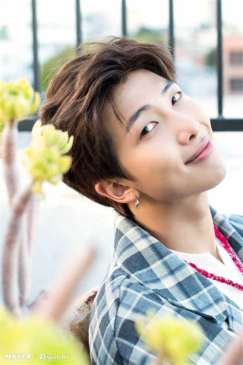
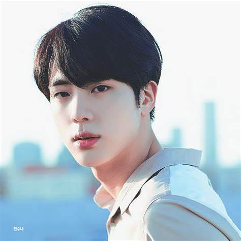
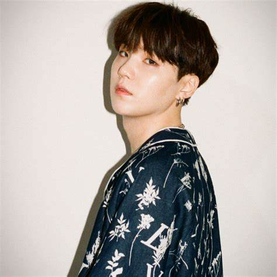
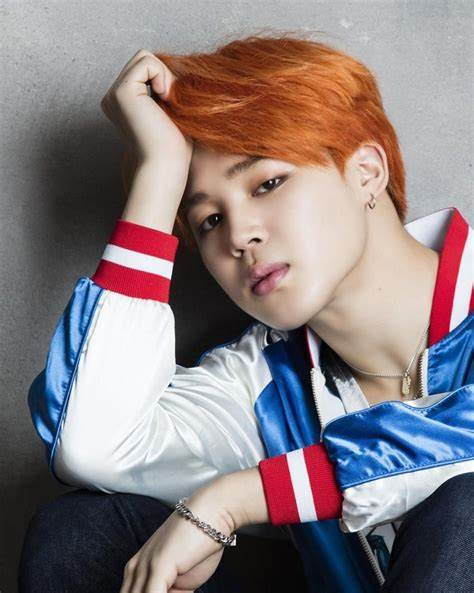
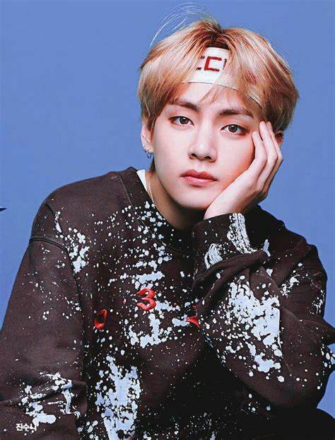
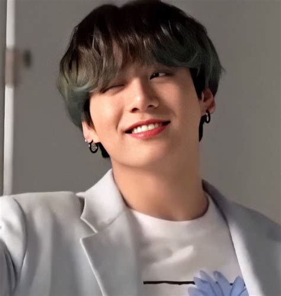

"Beyond The Scene".
In 2015, they found success in the American charts with their fourth extended play (EP), The Most Beautiful Moment in Life, Pt. 2 entering the U.S Billboard 200.
The CEO of Big Hit Entertainment, Bang Si-Hyuk, met with the group's leader RM and was impressed by his rapping.
BTS was supposed to be like a hip hop group, but Bang decided that young people nowadays need "a hero who can lend them a shoulder to lean on, even without speaking a single word".
He decided that those heroes would be the members of BTS and so the group was reorganized into a more traditional idol group.
On June 12, 2013, BTS released their album 2 Cool 4 Skool. This was a song with a single song, "No More Dream." It was not a commercial success.
In September 2014, BTS released their extended play, (Oh! Are you late, too?)
In it were songs that criticized the Korean educational system and talked about finding themselves in the world.
Members
BTS has 7 Members
| Rm |
Jin |
Suga |
Jhope |
Jimin |
V |
JK |
|  |
 |
 |
|
 |
 |
 |
| Kim Namjoon |
Kim Seokjin |
Minyoongi |
Junghoseok |
ParkJimin |
KimTaehyung |
JeonJungkook |
| 12.09.1994 |
04.12.1992 |
09.03.1993 |
18.02.1994 |
13.10.1995 |
30.12.1995 |
01.09.1997 |
| Rapper |
Vocal |
Rapper |
Rapper |
Vocal |
Vocal |
Vocal |
Albums
Korean Albums
- Dark & Wild (2014)
- Wings (2016)
- Love Yourself: Tear (2018)
- Map of the Soul: 7 (2020)
- BE (2020)
Japanese Albums
- 2 Cool 4 Skool (2013)
- Youth (2016)
- Face Yourself (2018)
- Map of the Soul: 7 ~The Journey~ (2020)
Feedback Form
Please fill this form to improve our site